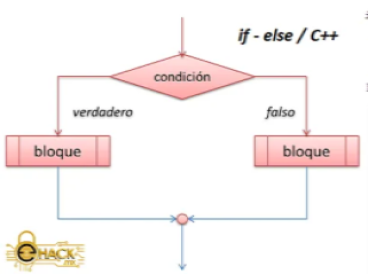
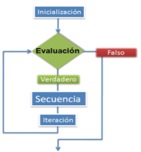
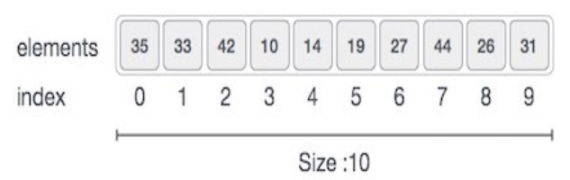

Librerias
Funciones
Main (principal)
Una librería es un conjunto de implementaciones funcionales, codificadas en un lenguaje de programación, que ofrece una interfaz bien definida para la funcionalidad que se invoca.
Una función es un bloque de código que realiza alguna operación , Una función puede definir opcionalmente parámetros de entrada que permiten a los llamadores pasar argumentos a la función. Una función también puede devolver un valor como salida.
Cada programa de C++ tiene una función principal que se debe llamar main , main sirve como punto de partida para la ejecución del programa. Normalmente, controla la ejecución del programa dirigiendo las llamadas a otras funciones del programa..
Algoritmos estándar para los flujos de salida.
Contiene los prototipos de las funciones y otras definiciones para el uso y manipulación de funciones matemáticas.
Contiene los prototipos de las funciones, macros, y tipos para utilidades de uso general.
Parte del a STL que contiene los algoritmos estándar, es quizá la más usada e importante (aunque no indispensable).
Flujos hacia/desde ficheros. Permite la manipulación de archivos desde el programar, tanto leer como escribir en ellos.
Es donde (x, y) es una coordenada de nuestra pantalla y nos sirbe para poner el texto en una cierta parte de la pantalla. .
Una variable es un espacio de memoria reservado para almacenar un valor que corresponde a un tipo de dato soportado por el lenguaje de programación .
Para valores tipo entero.
Para valores tipo números decimale.
Para valores tipo carácter. Un carácter es un símbolo, como los que usamos para escribir, por ejemplo ‘T’, ‘c’, ‘r’, ‘/’, ‘5’. En este último caso el 5 será considerado como sólo un carácter, como sólo un símbolo y no un número.
Para valores tipo booleanos, es decir, de afirmativo o negativo, cierto o falso..
Es una cadena de caracteres, palabras.
Un condicional, permite establecer una serie de condiciones al interior de nuestro programa, que nos ayudan a determinar que acciones llevará cabo dadas ciertas circunstancias .

Un Ciclo es una estructura que permiten ejecutar partes del código de forma repetida mientras se cumpla una condición. Esta condición puede ser simple o compuesta de otras condiciones unidas por operadores lógicos.

El tipo de variable vector permite almacenar varios valores bajo una sola variable y realizar operaciones complejas con esta. Todos los valores dentro del vector han de ser del mismo tipo.
